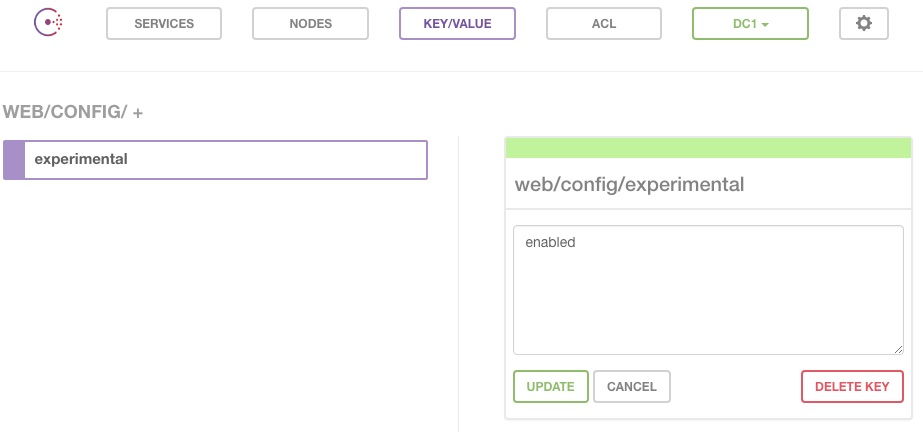

In January 2018, I started my first technical internship as a DevOps Engineer Co-op at Copperleaf Technologies in Vancouver, BC. Copperleaf's speciality in Decision Analytics solutions has given us clients around the world and naturally, there are many servers we need to manage and keep backups for. We needed an internal tool to keep our configuration information in the same place and to grab the correct data when needed in a streamlined way.
During my work term, I architected and implemented the Consul configuration system as an internal tool used by devs across the company.
Consul is a Service Discovery and Configuration tool provided by Hashicorp that provides service-based rather than host-based networking. Allowing network connections to be made directly to services (ex. SQL, Apache, nginx) removes the need for attention to be made towards IP addresses and hostnames where those services are running on. Applications can effortlessly connect to and update/retrieve configuration information stored in Consul's Key-value store in order to run their services.
As the system was meant to be used and depended on by many servers across the company, we had to ensure the system was was intuitive, secure, and highly available. Walking into this internship with no knowledge of the DevOps, this project required me to learn about and utilize a wide array of DevOps tools and technologies.
Many components of AWS were utilized to set up this project including: Elastic Compute Cloud (EC2) servers to run the Consul hosts, while dynamically creating security groups to ensure the appropriate ports are opened for communication between the Consul servers and within the office's subnets.
To ensure data persistence and security, Amazon Elastic Block Store (EBS) Volumes are attached for persistent storage, and snapshot backups are taken nightly and stored in a Simple Storage Service (S3) bucket. DNS entries for the servers were created with Amazon Route 53, which was then placed in front of a HTTPS/SSL Elastic Load Balancer (ELB) to allow secure traffic to the Consul server. To ensure that Consul data is kept secure, Consul has an Access Control List (ACL) system that generates unique tokens that grant specific permissions to users who supply that token.
Terraform is another Hashicorp tool that allows us to spin an entire fleet of AWS infrastructure from a configuration file (advertised as Infrastructure as Code), including special configurations such as instance tags and volume attachments.
Ansible is an automation tool that was then used to set up the instances and deploy Dockerized Consul agents, using Ansible's inventory to dynamically join the servers in the initial host setup.
Using DevOps tools, I was able to produce a highly available and fully configured Consul system that could be launched within a couple of minutes. The system is already operating in production, with Jenkins regularly targeting the system to collect data and run backup jobs.
The architecture and scripts allow for Consul to be easily scaled up and out to a larger fleet of servers spanning multiple regions. The system enables the possibility of other applications in the future, such as directly updating environment variables and rendering templates directly from the Consul UI, and allowing services to automatically connect with each other through Consul.